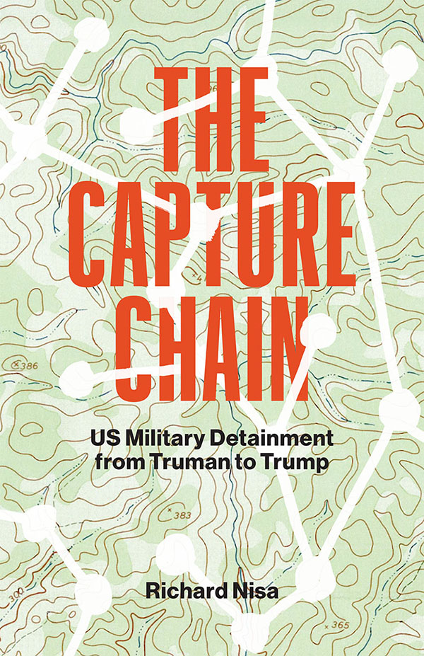

During the Cold War, major security narratives were constructed around containing (or rolling back) communism--a well-defined ideological and territorial foe. But rather than a space for the rational use of counter-force, the complexities of life along the capture chain often blurred the distinctions between friend and enemy, civilian and combatant, yielding a confounding illegibility that often amplified the scale of war's barbarity.